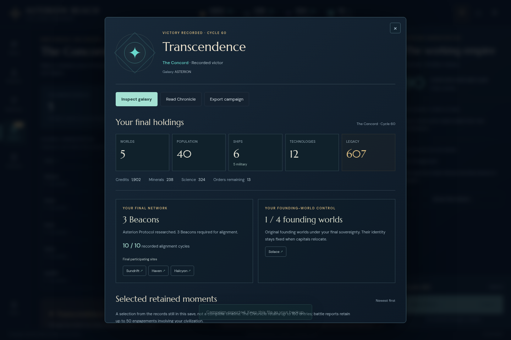
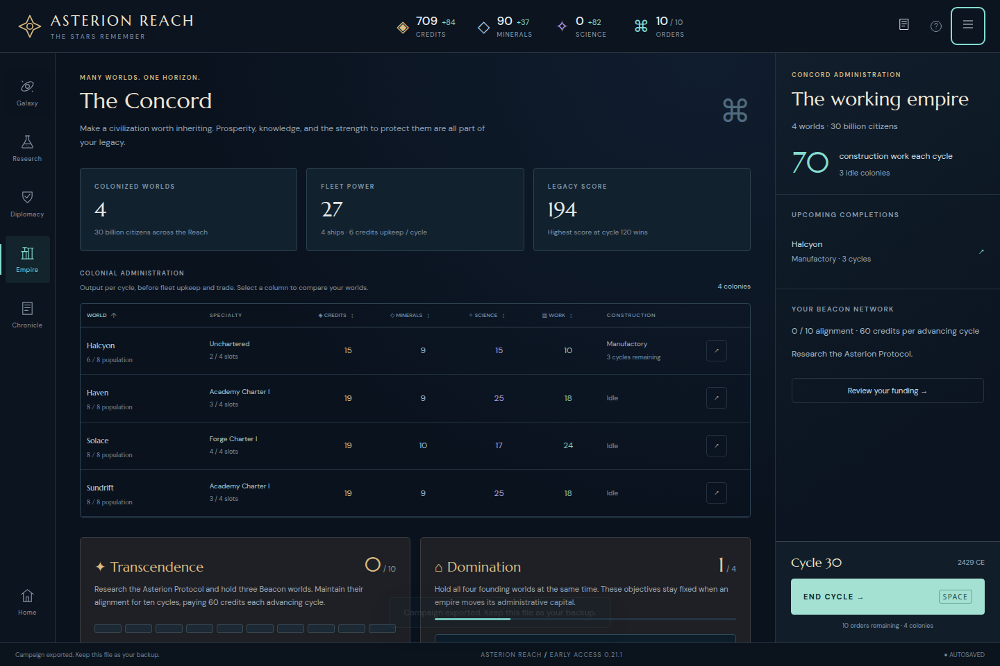
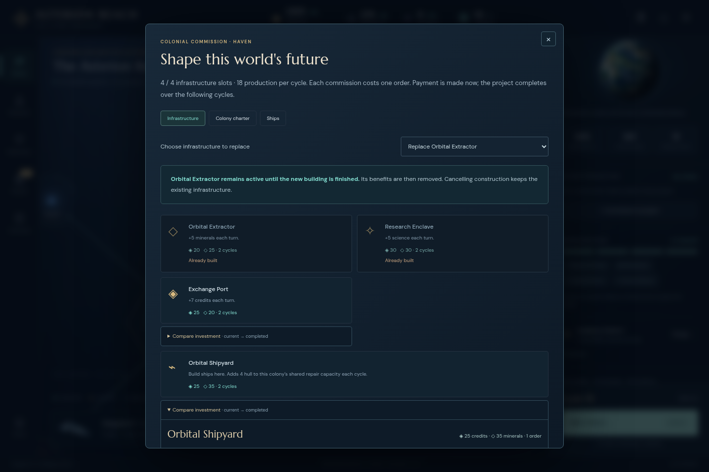
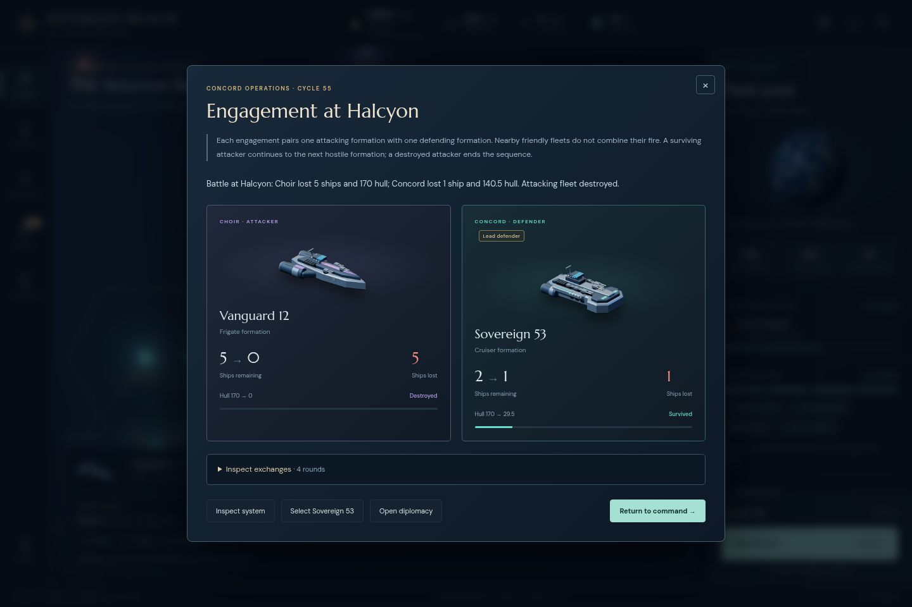
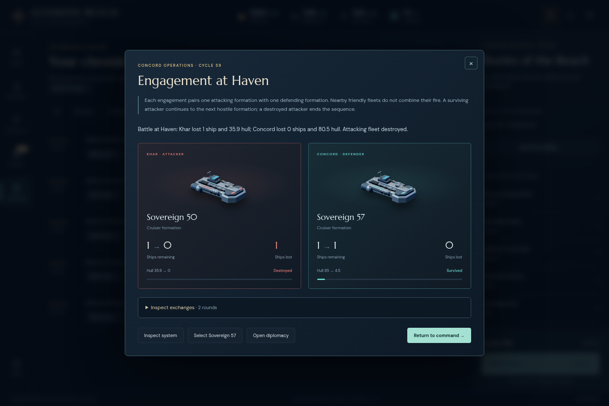

The Concord reached Transcendence at cycle 60. This continuation grew the default opening from three colonies at cycle 12 to five developed worlds, then protected three Beacons through wars declared by the Choir and Khar. All five actual battles and all 138 Chronicle entries remain inspectable in the finished save.

This is a separately labeled 0.21.0 → 0.21.1 continuation, not a relabeling of the original opening. The normal default ASTERION campaign was first played through cycle 12 in the frozen novice audit. Its unedited export was imported once through the visible picker into a fresh Chromium context at 1440 × 960 on immutable http://127.0.0.1:5215. This run began at 03:21:58 UTC and its isolated browser closed at 04:15:19 UTC.
Every strategic decision used rendered player information. The driver executed explicit, manually chosen clicks and keys; it contained no strategic policy. No save edits, grants, rollback, engine commands, or hidden-state inspection were used. Source markup was consulted only to resolve UI selectors. A separate reviewer reconstructed each frozen phase afterward and supplied no strategic advice from later state.
Initial provenance · Original cycle 12 input · UI driver · Complete original action receipts · Decision notes · Machine-readable summary · SHA-256 manifest
Values below were read from the displayed Empire/topbar. Income is the displayed per-cycle value; during alignment it is before the separately charged 60-credit payment. The cycle 60 row is a finished record, not a forecast.
| Cycle | Worlds | Pop. | Credits / income | Minerals / income | Science income | Ships | Legacy | Evidence |
|---|---|---|---|---|---|---|---|---|
| 12 | 3 | 14 | 105 / +52 | 162 / +20 | +27 | 2 | 103 | Export · UI |
| 20 | 4 | 22 | 226 / +71 | 84 / +25 | +50 | 2 | 163 | Export · UI |
| 30 | 4 | 30 | 709 / +84 | 90 / +37 | +82 | 4 | 194 | Export · UI |
| 40 | 5 | 35 | 1,160 / +96 | 51 / +47 | +87 | 4 | 266 | Export · UI |
| 50 | 5 | 38 | 1,847 / +110 | 189 / +48 | +98 | 5 | 477 | Export · UI |
| 60 | 5 | 40 | 1,902 / +86 | 238 / +38 | +99 | 6 | 607 | Export · UI |
Frozen phase receipts: through 30, through 40, through 50, through victory at 60. The full log additionally includes read-only ending inspection and export.



The retained reports date these AI actions to cycle 59; the player sees their resolution at cycle 60. Formations fight sequentially. The designated frigate lead absorbed the first two engagements before the remaining cruiser fought. This sequence was inspected through the finished Chronicle, with no state changes.
| Order | Khar attacker | Concord defender | Actual result | Receipt |
|---|---|---|---|---|
| 1 | Vanguard 9: 3 frigates, 102 hull | Lead Vanguard 3: 4 frigates, 136 hull | Khar destroyed. Concord lost 2 frigates; 54.1 hull remained. | UI text |
| 2 | Sovereign 50: 1 cruiser, 70.1 hull | Lead Vanguard 3: 2 frigates, 54.1 hull | Concord frigates destroyed. Khar cruiser survived at 35.9 hull. | UI text |
| 3 | Sovereign 50: 1 cruiser, 35.9 hull | Sovereign 57: 1 cruiser, 85 hull | Khar destroyed. Concord survived at 4.5 hull, then reached 12.5 after the Shipyard’s 8-hull repair. | Battle UI · Final fleet UI |

The final network is correctly presented as a finished record, without a future alignment budget. The Chronicle keeps all five battle reports and 138 entries. “Review this age” reopens the same conclusion and own final holdings. Exports before and after those read-only inspections are byte-for-byte identical: 118,420 bytes, SHA-256 96e011b3394a25084fdd128d082bb71039678ef7c38c0d62ef8ace7c27041f72.
First finished export · Export after inspection · Byte comparison · Ending checks · Reopened conclusion
A separate reviewer’s cumulative reconstruction matched 177 commands, 48 End Turns, 177 reload-next-command checks, all 11 actual exports, and 111 post-import resource/turn observations, with 178 valid states and no state corrections. Post-ending event states remained unchanged through close request 119. That proof is a separate artifact: /tmp/asterion-asterion21-independent-replay/final/index.html. It should accompany this report when archived. Canonical final state hash: c7bc2aaa0c13263b844e133abb3a7473ffc0567117644e3f0286d6caa73b5c63.
At actual cycle 38, the Empire context button said “Review your funding” although no Beacon was complete and no funding card was rendered yet. Clicking correctly reached the alignment requirements. The smallest correction is to name that destination “Review alignment” until a budget exists. This did not block play. The original finding, sources, actual export, and screenshot are frozen separately in the zero-Beacon link report.
No other required product correction was established by this continuation. It exercised natural colony development, exploration, diplomacy, commissioning, merging, defense leads, paid and passive repairs, five combat reports, and an ending. It did not exercise player invasions, colony captures, a successful peace settlement, a funding shortfall, or a sustained Beacon blockade. One seed and one campaign are not a balance study.
The 119 requests produced 435 completed UI actions, 113 full rendered observations, and 11 actual downloads. There were zero uncaught page errors and zero HTTP responses at or above 400. Five driver selector/navigation errors are retained below. Successful actions before each error were preserved; the campaign was never rolled back.
| Request | What happened and recovery |
|---|---|
| 10 | The selector used .development-card; the visible card is .build-card. Earlier navigation succeeded. Request 11 completes the intended Academy purchase. |
| 14 | Enter successfully founded Halcyon. The following fleet-switch control no longer existed after the Ark was consumed. Requests 15–16 inspect Empire and select the scout normally. |
| 66 | End Cycle reached 38 and opened the foreign-war briefing. The following page shortcut had no effect while the modal was open. Request 68 dismisses it and navigates normally. |
| 74 | The third Beacon purchase and End Cycle to 44 succeeded. The generic funding selector matched a hidden map button and the visible context button. Request 75 narrows to the visible context control. |
| 110 | Read Chronicle opened correctly. The filter selector used Combat instead of the actual lowercase combat value. Request 112 activates the visible Combat button. |
Original errors with recovery notes. The cycle 60 phase metadata describes the gameplay boundary through request 109; request 110’s later selector mistake occurred only during read-only ending inspection.
| Request | After | Decision or inspection note | Evidence |
|---|---|---|---|
| 1 | Cycle 01 | Start separate actual continuation; normal default startup only before import. | UI text |
| 2 | Cycle 01 | Visible menu import picker; untouched 0.21.0 cycle 12 export restored on 0.21.1. | UI text |
| 3 | Cycle 12 | Restore confirmed; inspect public Empire state before choosing next developments. | UI text |
| 4 | Cycle 12 | Sundrift is idle and unchartered; inspect permanent development choices before spending. | UI text |
| 5 | Cycle 12 | Save for an Academy charter after next income. Continue scouting from Kharos before returning the veteran frigate home. | UI text |
| 6 | Cycle 12 | Scout back through Corvus to inspect remaining frontier lanes. | UI text |
| 7 | Cycle 12 | Return scout toward central unsurveyed branches; chart a homeward course for the military frigate. | UI text |
| 8 | Cycle 12 | Plan Solace return through ten charted jumps; planning is free and resumes the holding fleet. | UI text |
| 9 | Cycle 13 | Spend one jump on the planned return, then collect income and the pending Ark completion. | UI text |
| 10 | See action receipts | Commit Sundrift to an Academy charter: +6 science and an eight-cycle build, funded by this cycle income. | No final observation |
| 11 | Cycle 13 | Correct the driver-only selector typo; no purchase occurred in the failed request. Select the visible Academy charter card. | UI text |
| 12 | Cycle 13 | Inspect Halcyon as a nearby fourth colony before moving the newly completed Ark. | UI text |
| 13 | Cycle 13 | Choose 78% Halcyon for compact expansion; preview settlement before confirmation. | UI text |
| 14 | See action receipts | Pay the displayed 30 credits/20 minerals/one order to found Halcyon. Defer new building spending until income recovers. | No final observation |
| 15 | Cycle 13 | Settlement consumed the Ark and its fleet bar disappeared. Use Empire registry to select the scout; this is a driver navigation correction. | UI text |
| 16 | Cycle 13 | Select scout from the visible Fleet Registry. | UI text |
| 17 | Cycle 13 | Use Aurelia to reach the still-unsurveyed central branch. | UI text |
| 18 | Cycle 13 | Select the visible unsurveyed Thalassa label to inspect its charted route. | UI text |
| 19 | Cycle 14 | Thalassa is five charted jumps away; take the available jump and let the colony economy recover. | UI text |
| 20 | Cycle 14 | Autonomous Industry completed; select a science path toward later Beacon research. | UI text |
| 21 | Cycle 14 | Choose Resonance Theory for +2 science per colony and the Quantum Archives prerequisite. | UI text |
| 22 | Cycle 14 | Compare the newly unlocked Manufactory with other Solace infrastructure before committing the capital's final free slot. | UI text |
| 23 | Cycle 15 | Build Solace Manufactory, then advance both already-planned journeys. Keep 29 credits before ordinary income. | UI text |
| 24 | Cycle 15 | Add Halcyon science and Haven production, then survey Thalassa with the scout while the frigate returns home. | UI text |
| 25 | Cycle 16 | Thalassa is an unclaimed 82% Terran world. With both fleets spent and all four colonies building, advance to the Resonance completion. | UI text |
| 26 | Cycle 16 | Start Quantum Archives at 6/360 science, then review treaty remaining durations and border access. | UI text |
| 27 | Cycle 16 | All three treaties remain open, and Khar grievance is low. Scout the unsurveyed western branch next by selecting visible Nacre. | UI text |
| 28 | Cycle 17 | Spend two scout jumps toward Nacre and one homeward frigate jump; retain funds while colonial projects mature. | UI text |
| 29 | Cycle 17 | Hesper exposes adjacent unsurveyed Sable. Take this short exploratory detour before resuming the western route. | UI text |
| 30 | Cycle 17 | Sable reveals the Veyr border at Aster. Enter through the active trade agreement to chart that branch. | UI text |
| 31 | Cycle 18 | Return the frigate another jump and review colonial completions at cycle 18. | UI text |
| 32 | Cycle 18 | Solace Manufactory is complete. Inspect a Forge charter to turn the mature capital into the fleet-building center. | UI text |
| 33 | Cycle 18 | Commission Forge I at Solace for +6 production and military mineral savings; survey Veyr Prime through peaceful open borders. | UI text |
| 34 | Cycle 19 | The fourth founding world is now identified. Survey the Veyr colony at Eos, then end the cycle with no extra spending. | UI text |
| 35 | Cycle 19 | Continue peaceful survey through the connected Veyr worlds. | UI text |
| 36 | Cycle 20 | Survey Cinder, bring the frigate to Kepler, and preserve an actual cycle 20 UI export before further decisions. | UI text |
| 37 | Cycle 20 | Use Sundrift's open slot for a Manufactory to accelerate later projects; advance the frigate to Haven and inspect scout connections. | UI text |
| 38 | Cycle 21 | Chart a short route to unsurveyed Antares; keep minerals for Haven's Academy charter when its Manufactory finishes. | UI text |
| 39 | Cycle 21 | Commission Haven Academy I after its Manufactory completion. The veteran frigate reaches Solace; the scout surveys Antares. | UI text |
| 40 | Cycle 22 | Resume the western survey and invest in Halcyon mineral income; mineral reserves are now the limit on simultaneous projects. | UI text |
| 41 | Cycle 22 | Scout continues toward Nacre. Hold the returned frigate at the capital, and inspect Forge-discounted ship costs before saving for a second military hull. | UI text |
| 42 | Cycle 24 | Keep the capital fleet holding and save the 32 minerals needed for a new Vanguard. Scout spends its two available jumps while research and construction advance to cycle 24. | UI text |
| 43 | Cycle 24 | Start the Protocol and commission a Forge-discounted Vanguard at Solace. Scout completes its planned survey of Nacre. | UI text |
| 44 | Cycle 24 | Nacre is a rich 82% Terran expansion candidate. Survey its newly charted neighbor Meridian before selecting the next destination. | UI text |
| 45 | Cycle 24 | Meridian's discovery was already resolved at cycle 11; read the visible expedition record before leaving. | UI text |
| 46 | Cycle 25 | Advance to cycle 25 and survey Eidolon, the remaining branch beside Meridian. | UI text |
| 47 | Cycle 26 | Bring the scout toward the home branch. Add Haven's missing mineral infrastructure before commissioning another colony ship; cycle 26 should complete the new frigate. | UI text |
| 48 | Cycle 26 | Select the veteran frigate to combine the two local military hulls into a defensive formation. | UI text |
| 49 | Cycle 26 | Merge produces the previewed 68-hull formation and retains Hold. Assign it as the home defense lead while the scout returns to Solace. | UI text |
| 50 | Cycle 27 | Commission an Ark for rich Nacre at cycle 27. Survey nearby Asterion while waiting for the ship to complete. | UI text |
| 51 | Cycle 28 | Return scout via Haven. Both new Extractors are now working; invest the mineral gain in Halcyon's Manufactory. | UI text |
| 52 | Cycle 28 | Survey Peregrine, the last unvisited branch beside the home colonies. | UI text |
| 53 | Cycle 28 | Fit the charted galaxy to locate the remaining unsurveyed system before assigning the scout's next trip. | UI text |
| 54 | Cycle 28 | UI text | |
| 55 | Cycle 29 | Caelum was charted beside Lumen during the original opening. Reach it through Lumen's visible connected-system list, then spend the remaining scout jump along the plotted route. | UI text |
| 56 | Cycle 30 | The Ark starts its three-jump Nacre journey while the scout advances toward Caelum. Preserve the requested actual cycle 30 checkpoint before continuing toward a natural ending. | UI text |
| 57 | Cycle 30 | Before further expansion, review current trust, grievances and treaty status at the preserved cycle 30 checkpoint. | UI text |
| 58 | Cycle 31 | Treaties remain strong with zero grievances, so retain peaceful relations. Continue both routes, then inspect Nacre's settlement confirmation at cycle 31. | UI text |
| 59 | Cycle 32 | Found Nacre and immediately commission its Extractor. Preserve funds for Beacons while the scout continues toward Caelum. | UI text |
| 60 | Cycle 33 | Add one more low-cost frigate for the growing five-world empire, while reserving the bulk of minerals for three future Beacons. | UI text |
| 61 | Cycle 34 | All 42 charted systems are now surveyed. Return the scout to Nacre and merge the third frigate into the home defensive formation after completion. | UI text |
| 62 | Cycle 35 | Keep the three-frigate home defense in place and continue the scout's return. Inspect Protocol progress before committing mineral reserves. | UI text |
| 63 | Cycle 36 | Scout returns to Nacre and holds. Advance the final Protocol cycle and review newly available victory requirements. | UI text |
| 64 | Cycle 36 | Commission the first Beacon in Sundrift's open slot, add Nacre science, and research the inexpensive weapons upgrade to protect the future network. | UI text |
| 65 | Cycle 37 | Coherent Lances completes. Start Deflector Fields, then read the cycle briefing while saving the next Beacon's minerals. | UI text |
| 66 | See action receipts | At cycle 38 mineral reserves remain below a second Beacon's 180 cost. Review the alignment funding outlook before waiting for the next income cycle. | No final observation |
| 67 | Cycle 38 | The review selector did not resolve; observe the current visible page before choosing the funding link again. | UI text |
| 68 | Cycle 38 | The failed navigation was caused by a newly opened war briefing: Khar declared war on Veyr. Acknowledge it, then inspect the Concord funding outlook; our own treaties are unchanged by that foreign war. | UI text |
| 69 | Cycle 39 | Preserve the actual cycle 38 state for the minor funding-link wording finding, then continue normally to the next mineral income. | UI text |
| 70 | Cycle 40 | Cycle 39 reaches the second Beacon's mineral cost exactly; commission it at Haven, then preserve cycle 40 before choosing further research. | UI text |
| 71 | Cycle 41 | Begin capital-ship research after shields. While Beacon projects mature, review the foreign war and confirm it has not changed Concord treaties. | UI text |
| 72 | Cycle 42 | Keep peaceful relations and allow research, two Beacon projects, and mineral income to advance one cycle; no new commission is affordable yet. | UI text |
| 73 | Cycle 43 | The prior affordability note referred specifically to the third Beacon's 180 minerals. At cycle 43, inspect Halcyon's Beacon cost and open slot before committing it. | UI text |
| 74 | See action receipts | Commission the third Beacon at Halcyon. At cycle 44 Sundrift's first Beacon completes, so inspect the now-visible funding budget and remaining structural requirement. | No final observation |
| 75 | Cycle 44 | After the first Beacon a hidden map action shares this label; narrow the driver locator to the visible context button. No additional game command occurred in the selector error. | UI text |
| 76 | Cycle 44 | Capital Ship Architecture is complete. Spend stored science on the prerequisite for Stellar Accords and Distributed Command, which will improve fleet response speed. | UI text |
| 77 | Cycle 45 | Adaptive Biospheres completes immediately from stored science; select Stellar Accords. Move the three-frigate force to defend the first Beacon and inspect the new cruiser at Solace after cycle 45 income. | UI text |
| 78 | Cycle 46 | Commission the first cruiser for Beacon defense. Stellar Accords completes at 46; select Distributed Command to increase military movement and orders. | UI text |
| 79 | Cycle 47 | The second Beacon is due at Haven. Review the public network while the first cruiser finishes its last construction cycle. | UI text |
| 80 | Cycle 48 | The Choir has publicly restored its first Beacon. Keep our construction schedule and receive the first cruiser at cycle 48. | UI text |
| 81 | Cycle 49 | Commission the second cruiser. The Choir now owns neighboring Elysian, so station the first cruiser at Halcyon before its Beacon completes; the second will cover Haven. | UI text |
| 82 | Cycle 49 | Check whether the new shared border and defensive cruiser have affected Choir relations before advancing the race. | UI text |
| 83 | Cycle 50 | A shared border has created four grievances with the Choir. Send the ordinary 35-credit goodwill gift to maintain relations, then preserve the cycle 50 checkpoint. | UI text |
| 84 | Cycle 51 | Advance the simultaneous third Beacon, second cruiser and Distributed Command completions; inspect any resulting briefing before making further decisions. | UI text |
| 85 | Cycle 51 | Alignment has begun at 1/10. Start the remaining research, order one reserve cruiser, and station Sovereign 57 at Haven so all three Beacons have local military defense. | UI text |
| 86 | Cycle 52 | Keep the defended network stable and watch for public warnings as alignment advances. | UI text |
| 87 | Cycle 53 | Hold the existing defensive positions; no threat or interruption is currently visible. Advance one alignment cycle. | UI text |
| 88 | Cycle 54 | Receive the reserve cruiser at cycle 54 and inspect the capital's local fleet before assigning it to defense. | UI text |
| 89 | Cycle 54 | Preserve the actual war transition before responding. The Choir broke its trade treaty as our alignment reached four; inspect available diplomacy and public peace terms. | UI text |
| 90 | Cycle 54 | Peace is temporarily unavailable. Refill the capital reserve with one cruiser commission, move Sovereign 61 to Halcyon, and merge into the existing holding defensive lead for 170 hull. | UI text |
| 91 | Cycle 55 | Keep the reinforced Halcyon formation in place and let the next cycle resolve before making any attack decision. | UI text |
| 92 | Cycle 55 | Preserve the second war declaration. Khar owns Hesper on the eastern approach, so use Distributed Command to move the three frigates from Sundrift through Solace to Haven; they become the local defense lead alongside its cruiser. The two cruisers at Halcyon cover the Choir approach to Sundrift. | UI text |
| 93 | Cycle 55 | With a real second front, inspect replacing Haven's Extractor with a Shipyard to improve shared repairs and enable local reinforcements while preserving its Beacon and Academy support. | UI text |
| 94 | Cycle 55 | Read the actual replacement comparison before accepting the tradeoff from mineral income to frontline repair capacity. | UI text |
| 95 | Cycle 56 | Accept the displayed tradeoff: each frontline Shipyard replaces five minerals of income with four extra shared repair hull and local shipbuilding. Both Beacons remain intact. Resolve the next war cycle. | UI text |
| 96 | Cycle 56 | Read the first actual combat report: the Choir attack was destroyed at Halcyon, but our formation lost one cruiser and needs urgent repair. | UI text |
| 97 | Cycle 56 | Select the surviving cruiser directly from the battle report to inspect its available repair action. | UI text |
| 98 | Cycle 56 | Preserve the post-battle state before paid repairs. Spend one emergency repair order on the surviving Halcyon cruiser. | UI text |
| 99 | Cycle 57 | Two further repair orders restore the survivor to full 85 hull; return it to Hold and resolve cycle 57, when the replacement Shipyards and new reserve cruiser complete. | UI text |
| 100 | Cycle 57 | Both frontline Shipyards completed with their Beacons intact. Inspect the fresh capital cruiser before restoring Halcyon's two-ship formation. | UI text |
| 101 | Cycle 57 | A hostile Choir scout is visibly in Solace and prevents passive repairs there. Inspect the newly built local cruiser's engagement option before clearing the capital and reinforcing Halcyon. | UI text |
| 102 | Cycle 57 | Clear the visible hostile scout from the capital using the local cruiser; no expedition into rival territory or forced challenge is involved. | UI text |
| 103 | Cycle 57 | Clear the capital, refill its reserve queue, and restore Halcyon's two-cruiser formation. Use the two new frontline Shipyards for one frigate each, completing before the expected final alignment cycles. | UI text |
| 104 | Cycle 58 | Resolve the next cycle before checking whether peace negotiations have become available. | UI text |
| 105 | Cycle 58 | Five cycles have passed since the Choir war began; inspect current peace willingness rather than assuming negotiations are available. | UI text |
| 106 | Cycle 59 | Choir peace terms are visibly refused and Khar still has the early-war restriction. Keep defensive positions; no proposal is sent or paid while unavailable. | UI text |
| 107 | Cycle 59 | Peace remains refused. Merge Haven's new frigate into its lead formation, and send Halcyon's new frigate to guard Sundrift directly. Preserve the final pre-resolution state with all three Beacons defended. | UI text |
| 108 | Cycle 60 | Resolve the final projected alignment cycle with all three Beacons unblocked and funded; do not assume the outcome before the turn completes. | UI text |
| 109 | Cycle 60 | The ordinary final turn recorded a Concord Transcendence victory at cycle 60 after a last-turn Khar attack. Export the actual finished campaign before read-only conclusion inspection. | UI text |
| 110 | See action receipts | Read-only post-ending inspection: open the Chronicle from the conclusion and view the retained combat sequence, including the final Haven defense. | No final observation |
| 111 | Cycle 60 | Read Chronicle succeeded; the requested Combat filter name was a driver guess. Inspect the actual visible filter labels before selecting one. | UI text |
| 112 | Cycle 60 | Use the actual visible Combat filter button; its data value differs in case from the earlier driver guess. | UI text |
| 113 | Cycle 60 | Read-only: inspect the first Haven engagement in chronological order, from the retained newest-first list. | UI text |
| 114 | Cycle 60 | Read-only: inspect the engagement that destroyed the remaining frigates. | UI text |
| 115 | Cycle 60 | Read-only: inspect the cruiser defense that destroyed the final attacker. | UI text |
| 116 | Cycle 60 | Read-only: the final network action leads to the completed alignment card without a future funding budget. | UI text |
| 117 | Cycle 60 | Read-only: reopen the conclusion from Chronicle and verify retained final holdings and history remain available. | UI text |
| 118 | Cycle 60 | Export again after read-only ending inspection for a byte-for-byte comparison with the first finished export. | UI text |
| 119 | See action receipts | Actual continuation and read-only conclusion inspection are complete. Close only this isolated browser context; frozen servers and other profiles remain untouched. | No final observation |